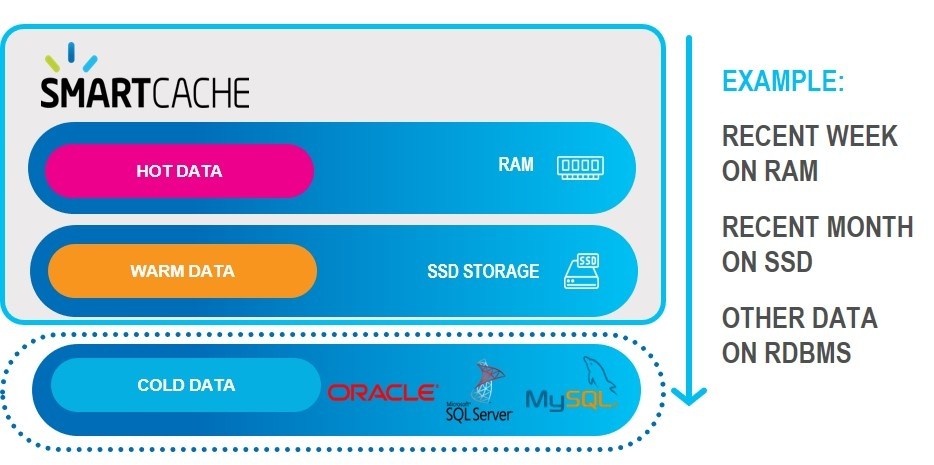

Data is stored in multiple data storage tiers — hot (in-memory), warm (SSD), and cold
(disk/external data store)
User-defined business rules allows you to place the most important data in hot storage, while other data can be in warm or cold storage.
manages the full data lifecycle by automatically storing the relevant data in the relevant tiers, federating the queries under the hood to gather all the data in optimal latency and evicting the data according to various policies, from least-recently-used (LRU) to user custom policies. Click here for more information about tiered storage.

"Important" does not necessarily mean "most frequently accessed" — for example, your business rules may place premium customers in hot storage, even if their data is less frequently required.